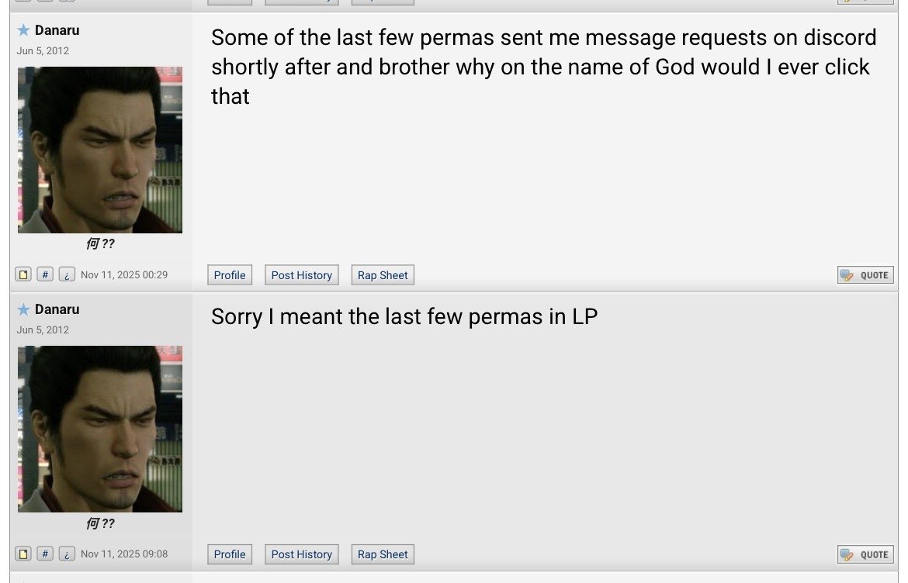

<title>The Danaru Statement</title>
<section class="frame" aria-labelledby="statement-title">
  <div style="max-width:820px;margin:0 auto;text-align:left;line-height:1.8;font-size:18px;">

    <h1 id="statement-title" class="glowtext" style="text-align:center;margin-bottom:10px;">
      The Danaru Statement
    </h1>

    <hr style="border:none;border-top:1px solid rgba(255,255,255,.12);margin:28px 0;">

    <p>
      Out of the hundreds of requests to the porn bot of my adults-only Discord,
      two characters that were thought to be of legal age were determined to not be so. All offending posts have
      been deleted and the channel has been locked behind an invite-only tag.<br>
      This was how the Discord was supposed to be set up, but the roles of the channel were improperly set.
    </p>

    <p>
      I take full responsibility for this and apologize for allowing this
      mistake to happen under my care. <br>I will strive to ensure a safe and
      responsible NSFW space in the future.
    </p>

    <blockquote style="
      margin:36px 0;
      padding:20px 24px;
      border-left:5px solid var(--accent2);
      background:rgba(255,255,255,.04);
      border-radius:12px;
      font-size:20px;
      font-weight:bold;
    ">
      Any accusation of this being anything more than a careless mistake is
      outrageously false and insulting, and Roar will defend himself vigorously to anyone that lies about the intentions of me and my friends.<br><br> 
      I've attempted to explain this to Danaru; I was ignored. My only recourse is this public statement (and the complete overtaking of his terrible Youtube SEO).<br>
    </blockquote>

    <hr style="border:none;border-top:1px solid rgba(255,255,255,.12);margin:36px 0;">
    <p style="font-size:20px;text-align:center;">
      To the friends that trust me and know the truth - I say this all the
      time, and I mean it more than ever, I love you guys.
    </p>

    <blockquote style="
      margin:36px 0;
      padding:20px 24px;
      border-left:5px solid var(--accent2);
      background:rgba(255,255,255,.04);
      border-radius:12px;
      font-size:20px;
      font-weight:bold;
    ">
      -Roar
    </blockquote><br><br><br><br><br><br><br><br>
    
    <div style="text-align:center; margin:30px 0;">
        
    </div>

    <p style="font-size:13px;text-align:center;">
      I tried to discuss this with you privately, coward. <br>How are you a moderator on <i>Something Awful</i> if you can't even handle a DM? <br>What a thin skinned little cunt.<br><br>
      
      If you wanted to run a thread that people actually wanted to bookmark, all you had to do was ask, man.<br>
      You didn't have to pull the ol' Uriah the Hittite on mine, but I guess I can forgive you.<br>
      You obviously need all the help you can get.<br><br>
      You can't even make Star Fox watchable.
    </p>
    
  </div>
</section>
